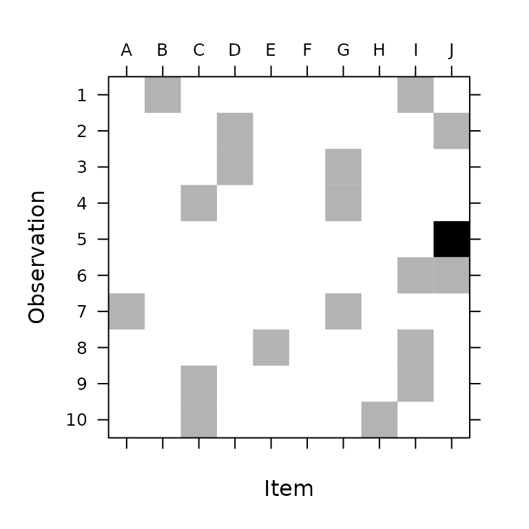
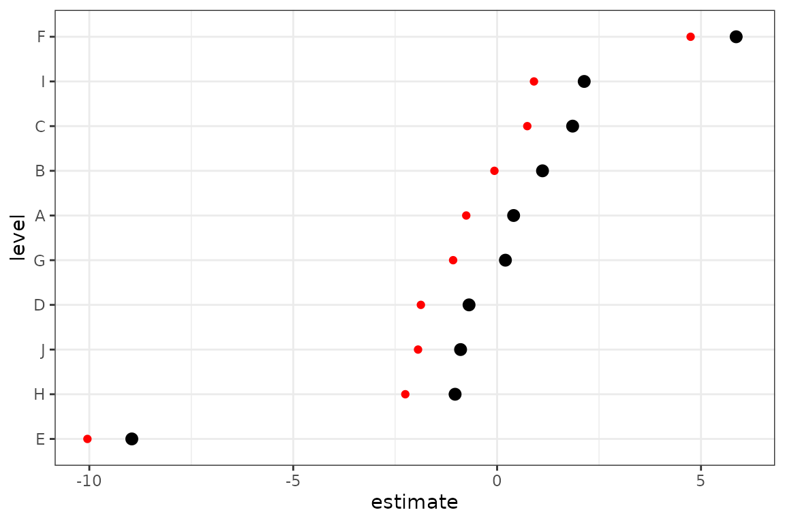

Group membership models using lmerMultiMember
Ben Bolker, adapted by Phillip Alday
Source:vignettes/group_membership.Rmd
group_membership.RmdGeneral idea
Consider a situation where we have multiple items of some sort which have associated effects, but we can’t association observations with single items; instead, each observation is associated with a group of items. (Two examples which have come up are (1) authorship of papers and (2) hockey players on a team.) These are not quite identical to “multi-membership models” (in part because group membership is binary, i.e., not weighted), although similar techniques to those shown here could work for multi-membership models.
Simple example
Load packages (we don’t really need anything beyond lmerMultiMember; the rest are for convenience/drawing pictures).
library(lmerMultiMember)
library(broom.mixed)
library(ggplot2)
theme_set(theme_bw())
library(Matrix)Construct a simulated example: first, simulate the design (structure).
nm <- 20 # number of groups
nobs <- 1000
set.seed(101)
## choose items for observations
pres <- matrix(rbinom(nobs * nm, prob = 0.25, size = 1), nrow = nobs, ncol = nm)
dimnames(pres) <- list(NULL, LETTERS[seq(nm)])
pres[1:5, ]## A B C D E F G H I J K L M N O P Q R S T
## [1,] 0 0 0 0 1 0 0 0 0 0 1 0 0 1 1 1 1 0 0 0
## [2,] 0 0 1 0 0 0 0 0 0 0 0 0 1 0 0 0 1 0 1 1
## [3,] 0 0 0 0 0 0 0 0 0 0 0 0 0 0 0 0 0 1 0 1
## [4,] 0 0 0 0 0 0 0 0 0 1 0 0 0 0 1 0 1 1 0 0
## [5,] 0 0 0 0 0 1 1 1 1 0 0 0 0 0 0 0 0 0 0 0
image(Matrix(pres),
ylim = c(1, 10), sub = "", ylab = "Observation",
xlab = "Item",
## draw tick labels at top
scales = list(at = 1:20, x = list(
labels = colnames(pres),
alternating = 2
))
)We can look at how many times a particular number of groups occurs (which should match \(Binomial(n=20, 0, p=0.25)\))
hist(rowSums(pres),
main = "Multi-Group Membership",
xlab = "Number of groups associated with an observation"
)Since we chose which items/individuals to include for each observation randomly and independently (Bernoulli with probability 0.25), we have a highly variable number of individuals present for different observations (1-11). This would be realistic for some examples (authorship), unrealistic for others (hockey) … I don’t think it really makes much difference computationally (statistically, having some observations with a single member must make estimation more powerful …) The 0/1 matrix (indicator variable for whether item \(i\) is included in observation \(j\)) is convenient, and will turn out to be the form we need for inclusion in the model. It should be fairly straightforward to convert other forms (e.g. a list of sets of items associated with each observation) to this form …
Now simulate the response variable.
b <- rnorm(nm, sd = 2) ## item-level effects
## n.b. get in trouble if we don't add residual error
## (theta is scaled relative to residual error)
y <- c(pres %*% b) + rnorm(nobs, sd = 1.5)Fit and the results look OK (correct item and residual variance estimated):
m1 <- lmer(y ~ 1 + (1 | membership),
data = data.frame(y = y, x = rep(1, nobs)),
memberships = list(membership = t(pres))
)
summary(m1)## Linear mixed model fit by REML. Model includes multiple membership random
## effects. [lmerModMultiMember]
## Formula: y ~ 1 + (1 | membership)
## Data: data.frame(y = y, x = rep(1, nobs))
##
## REML criterion at convergence: 3649.6
##
## Scaled residuals:
## Min 1Q Median 3Q Max
## -3.1676 -0.6347 -0.0237 0.6569 3.3445
##
## Random effects:
## Groups Name Variance Std.Dev.
## membership (Intercept) 3.840 1.960
## Residual 1.995 1.412
## Number of obs: 1000, groups: membership, 20
##
## Fixed effects:
## Estimate Std. Error t value
## (Intercept) 0.1618 0.1320 1.226
##
## Group memberships per observation for multiple membership REs:
## Min. per obs. Mean per obs. Max. per obs.
## membership 0 5.067 14The conditional modes by item look good:
dd <- tidy(m1, effects = "ran_vals")
dd <- transform(dd, level = reorder(level, estimate))
truth <- data.frame(level = LETTERS[seq(nm)], estimate = b)
ggplot(dd, aes(x = level, y = estimate)) +
geom_pointrange(aes(
ymin = estimate - 2 * std.error,
ymax = estimate + 2 * std.error
)) +
coord_flip() +
geom_point(data = truth, colour = "red")Zooming In: Equal, indepent contributions
Here, we look at a model where each observation is associated with precisely two groups to get a better feel.
set.seed(42)
nobs <- 1000
nm <- 10
dat <- data.frame(
x = runif(nobs),
z = runif(nobs),
# TODO: double check that all(g1 != g2)
g1 = sample(1:nm, nobs, TRUE),
g2 = sample(1:nm, nobs, TRUE)
)
dat$grps <- paste(LETTERS[dat$g1], LETTERS[dat$g2], sep = ",")
# fixed effects
beta <- c(1, 2, 3)
# random effects
bint <- rnorm(nm, sd = 3.14)
# we could be clever about setting the model matrix here, but it's
# easier and clearer how we're constructing bits if we're inefficient
fe <- beta[1] + beta[2] * dat$x + beta[3] * dat$z
# note that the group contributions for each observation are assumed to be
# independent and equally weighted.
# TODO: add example of unequal weights
re <- bint[dat$g1] + bint[dat$g2]
dat$y <- fe + re + rnorm(nobs, sd = 1)
weights <- weights_from_vector(dat$grps)
head(dat)## x z g1 g2 grps y
## 1 0.9148060 0.84829322 2 9 B,I 7.132846
## 2 0.9370754 0.06274633 4 10 D,J -1.199958
## 3 0.2861395 0.81984509 7 4 G,D 1.939330
## 4 0.8304476 0.53936029 3 7 C,G 3.706502
## 5 0.6417455 0.49902010 10 10 J,J -1.075549
## 6 0.5190959 0.02222732 10 9 J,I 1.807260
image(t(weights),
ylim = c(1, 10), sub = "", ylab = "Observation",
xlab = "Item",
## draw tick labels at top
scales = list(at = 1:20, x = list(
labels = colnames(pres),
alternating = 2
))
)
m2 <- lmer(y ~ 1 + x + z + (1 | g),
data = dat,
memberships = list(g = weights), REML = FALSE
)
summary(m2)## Linear mixed model fit by maximum likelihood . Model includes multiple
## membership random effects. [lmerModMultiMember]
## Formula: y ~ 1 + x + z + (1 | g)
## Data: dat
##
## AIC BIC logLik deviance df.resid
## 3759.7 3784.3 -1874.9 3749.7 995
##
## Scaled residuals:
## Min 1Q Median 3Q Max
## -5.9726 -0.4984 -0.0005 0.5191 4.7098
##
## Random effects:
## Groups Name Variance Std.Dev.
## g (Intercept) 14.48 3.805
## Residual 2.32 1.523
## Number of obs: 1000, groups: g, 10
##
## Fixed effects:
## Estimate Std. Error t value
## (Intercept) -1.7744 0.3147 -5.639
## x 1.9434 0.1666 11.667
## z 2.7957 0.1636 17.088
##
## Correlation of Fixed Effects:
## (Intr) x
## x -0.303
## z -0.266 0.000
##
## Group memberships per observation for multiple membership REs:
## Min. per obs. Mean per obs. Max. per obs.
## g 1 1.886 2Not ideal, but not horrible – it looks like there is an upward bias, but this is inline with the estimate for the group standard deviation being a bit off.
dd <- tidy(m2, effects = "ran_vals")
dd <- transform(dd, level = reorder(level, estimate))
truth <- data.frame(level = LETTERS[seq(nm)], estimate = bint)
ggplot(dd, aes(x = level, y = estimate)) +
geom_pointrange(aes(
ymin = estimate - 2 * std.error,
ymax = estimate + 2 * std.error
)) +
coord_flip() +
geom_point(data = truth, colour = "red")
A slightly more complex example
Here we build on our last example by adding a random slope.
set.seed(42)
nobs <- 10000
nm <- 26
dat <- data.frame(
x = runif(nobs),
z = runif(nobs),
# TODO: double check that all(g1 != g2)
g1 = sample(1:nm, nobs, TRUE),
g2 = sample(1:nm, nobs, TRUE)
)
dat$grps <- paste(LETTERS[dat$g1], LETTERS[dat$g2], sep = ",")
# fixed effects
beta <- c(1, 2, 3)
# random effects
bint <- rnorm(nm, sd = 3.14)
bx <- rnorm(nm, sd = 0.2)
# we could be clever about setting the model matrix here, but it's
# easier and clearer how we're constructing bits if we're inefficient
fe <- beta[1] + beta[2] * dat$x + beta[3] * dat$z
# note that the group contributions for each observation are assumed to be
# independent and equally weighted.
# TODO: add example of unequal weights
re <- bint[dat$g1] + bint[dat$g2] + (bx[dat$g1] + bx[dat$g2]) * dat$x
dat$y <- fe + re + rnorm(nobs, sd = 1)
head(dat)## x z g1 g2 grps y
## 1 0.9148060 0.5283896 11 13 K,M 9.7194660
## 2 0.9370754 0.6463879 24 12 X,L 4.9175119
## 3 0.2861395 0.8340490 17 2 Q,B 0.3754283
## 4 0.8304476 0.3457626 22 19 V,S 8.4488474
## 5 0.6417455 0.6217329 25 20 Y,T 5.8487113
## 6 0.5190959 0.6631953 23 10 W,J 9.5083034
image(t(weights_from_vector(dat$grps)),
ylim = c(1, 10), sub = "", ylab = "Observation",
xlab = "Item",
## draw tick labels at top
scales = list(at = 1:20, x = list(
labels = colnames(pres),
alternating = 2
))
)
m3 <- lmer(y ~ 1 + x + z + (1 + x | g),
data = dat, REML = FALSE,
memberships = list(g = weights_from_vector(dat$grps))
)
summary(m3)## Linear mixed model fit by maximum likelihood . Model includes multiple
## membership random effects. [lmerModMultiMember]
## Formula: y ~ 1 + x + z + (1 + x | g)
## Data: dat
##
## AIC BIC logLik deviance df.resid
## 31702.8 31753.3 -15844.4 31688.8 9993
##
## Scaled residuals:
## Min 1Q Median 3Q Max
## -5.8374 -0.5944 0.0028 0.5888 7.3928
##
## Random effects:
## Groups Name Variance Std.Dev. Corr
## g (Intercept) 10.33148 3.2143
## x 0.03115 0.1765 -0.07
## Residual 1.35828 1.1655
## Number of obs: 10000, groups: g, 26
##
## Fixed effects:
## Estimate Std. Error t value
## (Intercept) 2.90901 0.13064 22.27
## x 2.09441 0.07809 26.82
## z 2.99998 0.04034 74.37
##
## Correlation of Fixed Effects:
## (Intr) x
## x -0.303
## z -0.168 0.003
##
## Group memberships per observation for multiple membership REs:
## Min. per obs. Mean per obs. Max. per obs.
## g 1 1.9638 2
dd <- tidy(m3, effects = "ran_vals")
dd <- transform(dd, level = reorder(level, estimate))
truth <- rbind(
data.frame(level = LETTERS[seq(nm)], estimate = bint, term = "(Intercept)"),
data.frame(level = LETTERS[seq(nm)], estimate = bx, term = "x")
)
ggplot(dd, aes(x = level, y = estimate)) +
geom_pointrange(aes(
ymin = estimate - 2 * std.error,
ymax = estimate + 2 * std.error
)) +
coord_flip() +
geom_point(data = truth, colour = "red") +
facet_wrap(~term)
# note that we have a random slope for which we didn't introduce any variation
# in the data, which is the same as setting it to zero
m4 <- lmer(y ~ 1 + x + z + (1 + x + z | g),
data = dat, REML = FALSE,
memberships = list(g = weights_from_vector(dat$grps))
)
summary(m4)## Linear mixed model fit by maximum likelihood . Model includes multiple
## membership random effects. [lmerModMultiMember]
## Formula: y ~ 1 + x + z + (1 + x + z | g)
## Data: dat
##
## AIC BIC logLik deviance df.resid
## 31708.6 31780.7 -15844.3 31688.6 9990
##
## Scaled residuals:
## Min 1Q Median 3Q Max
## -5.8370 -0.5937 0.0025 0.5892 7.3900
##
## Random effects:
## Groups Name Variance Std.Dev. Corr
## g (Intercept) 1.031e+01 3.21108
## x 3.128e-02 0.17685 -0.07
## z 1.928e-04 0.01389 0.43 0.87
## Residual 1.358e+00 1.16543
## Number of obs: 10000, groups: g, 26
##
## Fixed effects:
## Estimate Std. Error t value
## (Intercept) 2.91077 0.13119 22.19
## x 2.09222 0.07821 26.75
## z 2.99999 0.04062 73.86
##
## Correlation of Fixed Effects:
## (Intr) x
## x -0.318
## z -0.192 0.102
##
## Group memberships per observation for multiple membership REs:
## Min. per obs. Mean per obs. Max. per obs.
## g 1 1.9638 2
# note that we have a random slope for which we didn't introduce any variation
# in the data, which is the same as setting it to zero
m4zc <- lmer(y ~ 1 + x + z + (1 + x + z || g),
data = dat, REML = FALSE,
memberships = list(g = weights_from_vector(dat$grps))
)
summary(m4zc)## Linear mixed model fit by maximum likelihood . Model includes multiple
## membership random effects. [lmerModMultiMember]
## Formula: y ~ 1 + x + z + (1 + x + z || g)
## Data: dat
##
## AIC BIC logLik deviance df.resid
## 31702.9 31753.4 -15844.4 31688.9 9993
##
## Scaled residuals:
## Min 1Q Median 3Q Max
## -5.8387 -0.5935 0.0035 0.5888 7.3888
##
## Random effects:
## Groups Name Variance Std.Dev.
## g (Intercept) 10.3159 3.2118
## g.1 x 0.0311 0.1763
## g.2 z 0.0000 0.0000
## Residual 1.3583 1.1655
## Number of obs: 10000, groups: g, 26
##
## Fixed effects:
## Estimate Std. Error t value
## (Intercept) 2.90949 0.13044 22.31
## x 2.09370 0.07806 26.82
## z 2.99992 0.04034 74.37
##
## Correlation of Fixed Effects:
## (Intr) x
## x -0.298
## z -0.168 0.003
##
## Group memberships per observation for multiple membership REs:
## Min. per obs. Mean per obs. Max. per obs.
## g 1 1.9638 2Session info:
## R version 4.2.1 (2022-06-23)
## Platform: x86_64-pc-linux-gnu (64-bit)
## Running under: Ubuntu 20.04.5 LTS
##
## Matrix products: default
## BLAS: /usr/lib/x86_64-linux-gnu/blas/libblas.so.3.9.0
## LAPACK: /usr/lib/x86_64-linux-gnu/lapack/liblapack.so.3.9.0
##
## locale:
## [1] LC_CTYPE=C.UTF-8 LC_NUMERIC=C LC_TIME=C.UTF-8
## [4] LC_COLLATE=C.UTF-8 LC_MONETARY=C.UTF-8 LC_MESSAGES=C.UTF-8
## [7] LC_PAPER=C.UTF-8 LC_NAME=C LC_ADDRESS=C
## [10] LC_TELEPHONE=C LC_MEASUREMENT=C.UTF-8 LC_IDENTIFICATION=C
##
## attached base packages:
## [1] stats graphics grDevices utils datasets methods base
##
## other attached packages:
## [1] Matrix_1.4-1 ggplot2_3.3.6 broom.mixed_0.2.9.4
## [4] lmerMultiMember_0.10.0
##
## loaded via a namespace (and not attached):
## [1] Rcpp_1.0.9 lattice_0.20-45 tidyr_1.2.1 listenv_0.8.0
## [5] rprojroot_2.0.3 digest_0.6.30 utf8_1.2.2 parallelly_1.32.1
## [9] R6_2.5.1 backports_1.4.1 evaluate_0.17 highr_0.9
## [13] pillar_1.8.1 rlang_1.0.6 minqa_1.2.4 furrr_0.3.1
## [17] nloptr_2.0.3 jquerylib_0.1.4 rmarkdown_2.17 pkgdown_2.0.6
## [21] labeling_0.4.2 textshaping_0.3.6 desc_1.4.2 splines_4.2.1
## [25] lme4_1.1-30 stringr_1.4.1 munsell_0.5.0 broom_1.0.1
## [29] compiler_4.2.1 xfun_0.34 pkgconfig_2.0.3 systemfonts_1.0.4
## [33] globals_0.16.1 htmltools_0.5.3 tidyselect_1.2.0 tibble_3.1.8
## [37] codetools_0.2-18 fansi_1.0.3 future_1.28.0 dplyr_1.0.10
## [41] withr_2.5.0 MASS_7.3-57 grid_4.2.1 nlme_3.1-157
## [45] jsonlite_1.8.2 gtable_0.3.1 lifecycle_1.0.3 magrittr_2.0.3
## [49] scales_1.2.1 cli_3.4.1 stringi_1.7.8 cachem_1.0.6
## [53] farver_2.1.1 fs_1.5.2 bslib_0.4.0 ragg_1.2.3
## [57] generics_0.1.3 vctrs_0.4.2 boot_1.3-28 tools_4.2.1
## [61] forcats_0.5.2 glue_1.6.2 purrr_0.3.5 parallel_4.2.1
## [65] fastmap_1.1.0 yaml_2.3.6 colorspace_2.0-3 memoise_2.0.1
## [69] knitr_1.40 sass_0.4.2